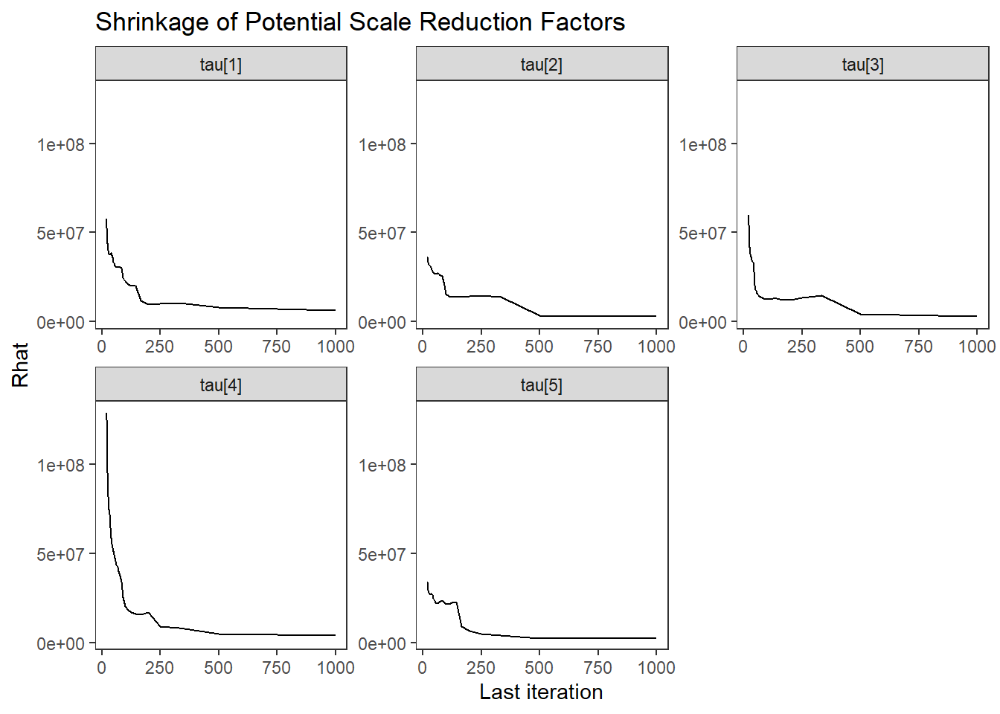
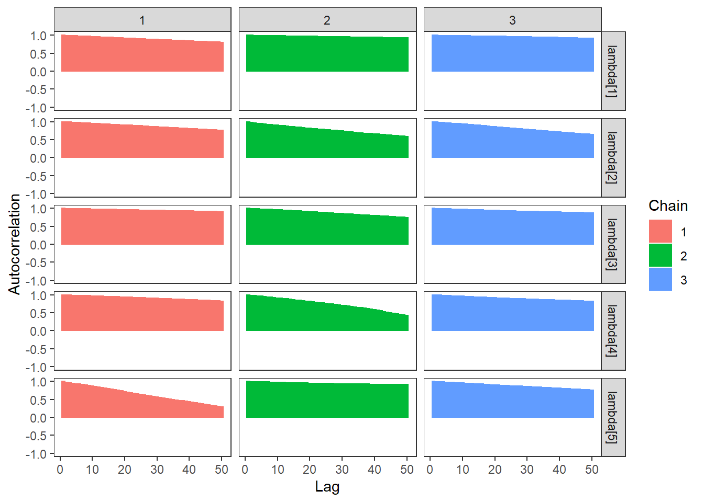
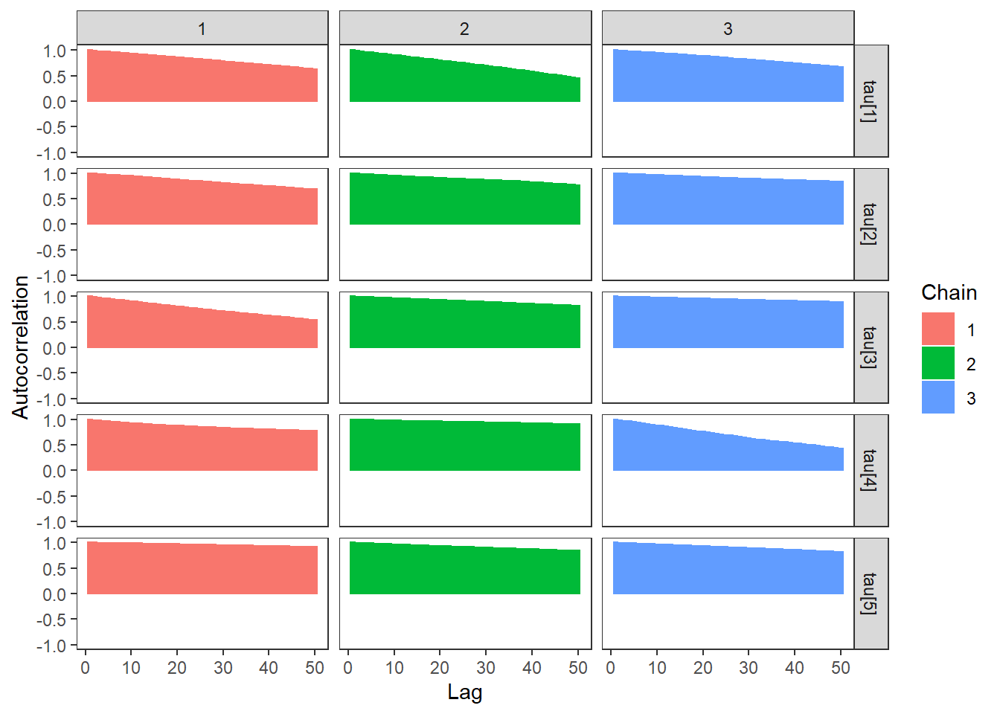
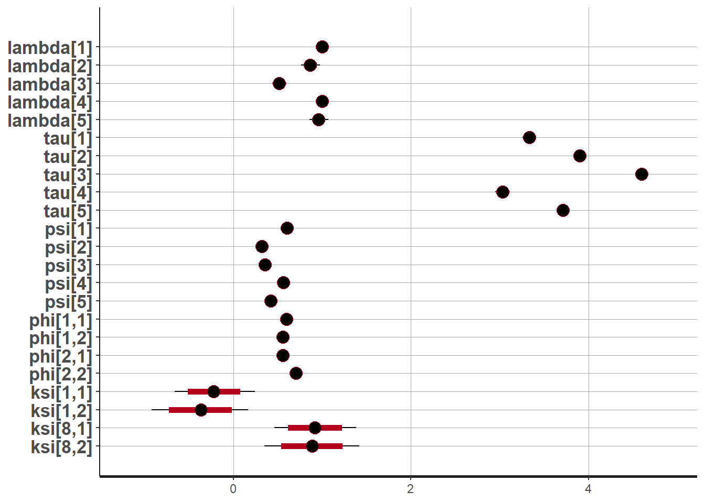
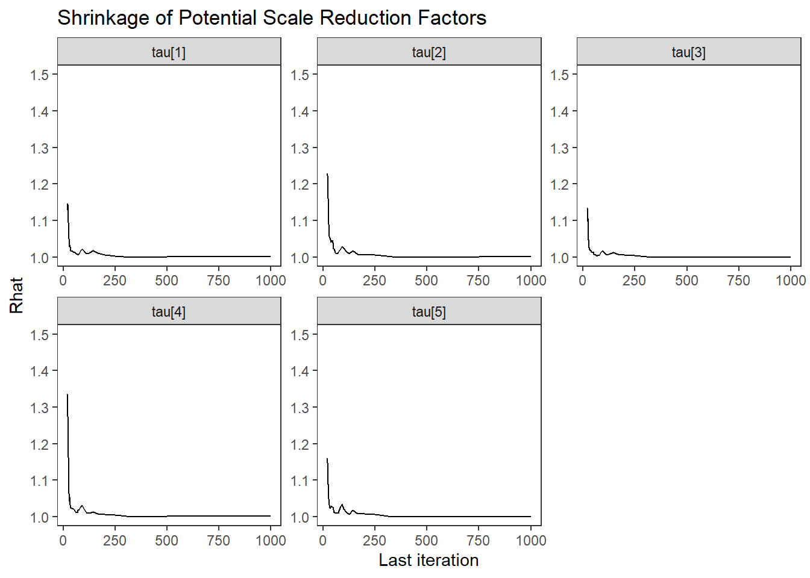
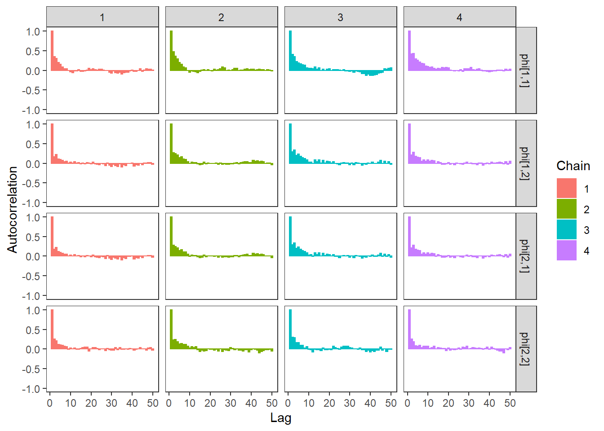
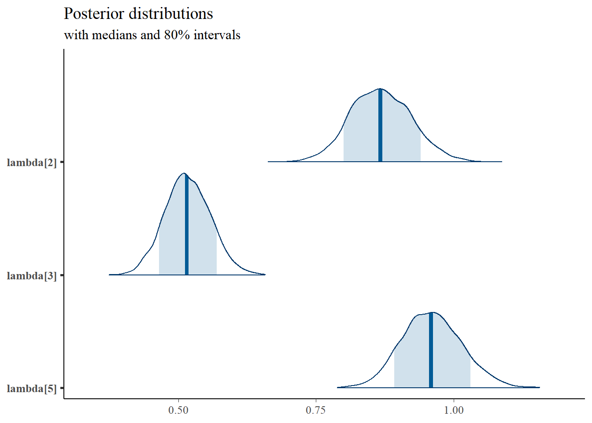

9.3 Stan - Two Latent Variable
9.3.1 Inverse-Wishart Prior
Using Stan based on a nearly identical model structure presented in the text.
model_cfa_2factor <- "
data {
int N;
int J;
int M;
matrix[N, J] X;
matrix[M, M] phi0;
}
parameters {
matrix[M, M] phi; // latent variable covaraince matrix
matrix[N, M] ksi; //latent variable values
real lambda[J]; //factor loadings matrix
real tau[J]; //intercepts
real<lower=0> psi[J]; //residual variance
}
model {
// likelihood for data
for(i in 1:N){
X[i, 1] ~ normal(tau[1] + ksi[i,1]*lambda[1], psi[1]);
X[i, 2] ~ normal(tau[2] + ksi[i,1]*lambda[2], psi[2]);
X[i, 3] ~ normal(tau[3] + ksi[i,1]*lambda[3], psi[3]);
X[i, 4] ~ normal(tau[4] + ksi[i,2]*lambda[4], psi[4]);
X[i, 5] ~ normal(tau[5] + ksi[i,2]*lambda[5], psi[5]);
// prior for ksi
ksi[i] ~ multi_normal(rep_vector(0, M), phi);
}
// latent variable variance matrix
phi ~ inv_wishart(2, phi0);
// prior for measurement model parameters
tau ~ normal(3, 10);
psi ~ inv_gamma(5, 10);
lambda[1] ~ normal(1, .001);
lambda[2] ~ normal(1, 10);
lambda[3] ~ normal(1, 10);
lambda[4] ~ normal(1, .001);
lambda[5] ~ normal(1, 10);
}
"
# data must be in a list
dat <- as.matrix(read.table("code/CFA-Two-Latent-Variables/Data/IIS.dat", header=T))
mydata <- list(
N = 500, J = 5,
M = 2,
X = dat,
phi0 = matrix(c(1, .3, .3, 1), ncol=2)
)
# # initial values
start_values <- list(
list(
phi= structure(
.Data= c(1, 0.30, 0.30, 1),
.Dim=c(2, 2)),
tau = c(3, 3, 3, 3, 3),
lambda= c(1, 1, 1, 1, 1),
psi=c(.5, .5, .5, .5, .5)
),
list(
phi= structure(
.Data= c(1, 0, 0, 1),
.Dim=c(2, 2)),
tau = c(5, 5, 5, 5, 5),
lambda= c(1, .7, .7, 1, .7),
psi=c(2, 2, 2, 2, 2)
),
list(
phi= structure(
.Data= c(1, 0.10, 0.10, 1),
.Dim=c(2, 2)),
tau = c(1, 1, 1, 1, 1),
lambda= c(1, 1.3, 1.3, 1, 1.3),
psi=c(1, 1, 1, 1, 1)
)
)
# Next, need to fit the model
# I have explicitly outlined some common parameters
fit <- stan(
model_code = model_cfa_2factor, # model code to be compiled
data = mydata, # my data
init = start_values, # starting values
chains = 3, # number of Markov chains
#warmup = 1000, # number of warm up iterations per chain
iter = 10000, # total number of iterations per chain
cores = 3, # number of cores (could use one per chain)
control = list(adapt_delta = 0.9,
max_treedepth = 12),
refresh = 0 # no progress shown
)## Warning in system(paste(CXX, ARGS), ignore.stdout = TRUE, ignore.stderr = TRUE): '-E' not found## Warning: There were 14950 divergent transitions after warmup. See
## http://mc-stan.org/misc/warnings.html#divergent-transitions-after-warmup
## to find out why this is a problem and how to eliminate them.## Warning: There were 50 transitions after warmup that exceeded the maximum treedepth. Increase max_treedepth above 12. See
## http://mc-stan.org/misc/warnings.html#maximum-treedepth-exceeded## Warning: Examine the pairs() plot to diagnose sampling problems## Warning: The largest R-hat is 3.79, indicating chains have not mixed.
## Running the chains for more iterations may help. See
## http://mc-stan.org/misc/warnings.html#r-hat## Warning: Bulk Effective Samples Size (ESS) is too low, indicating posterior means and medians may be unreliable.
## Running the chains for more iterations may help. See
## http://mc-stan.org/misc/warnings.html#bulk-ess## Warning: Tail Effective Samples Size (ESS) is too low, indicating posterior variances and tail quantiles may be unreliable.
## Running the chains for more iterations may help. See
## http://mc-stan.org/misc/warnings.html#tail-ess# first get a basic breakdown of the posteriors
print(fit,
pars =c("lambda", "tau", "psi",
"phi",
"ksi[1, 1]", "ksi[1, 2]",
"ksi[8, 1]", "ksi[8, 2]"))## Inference for Stan model: 9cba7ccbea0f9cb6bfe744cf6be59b64.
## 3 chains, each with iter=10000; warmup=5000; thin=1;
## post-warmup draws per chain=5000, total post-warmup draws=15000.
##
## mean se_mean sd 2.5% 25% 50% 75% 97.5% n_eff Rhat
## lambda[1] 1.00 0.00 0.00 1.00 1.00 1.00 1.00 1.00 2 7.23
## lambda[2] 1.00 0.20 0.24 0.70 0.70 1.00 1.30 1.30 2 335751.68
## lambda[3] 1.00 0.20 0.24 0.70 0.70 1.00 1.30 1.30 2 277279.09
## lambda[4] 1.00 0.00 0.00 1.00 1.00 1.00 1.00 1.00 2 5.87
## lambda[5] 1.00 0.20 0.24 0.70 0.70 1.00 1.30 1.30 2 397640.53
## tau[1] 3.00 1.33 1.63 1.00 1.00 3.00 5.00 5.00 2 1763632.95
## tau[2] 3.00 1.33 1.63 1.00 1.00 3.00 5.00 5.00 2 2151915.04
## tau[3] 3.00 1.33 1.63 1.00 1.00 3.00 5.00 5.00 2 2081316.86
## tau[4] 3.00 1.33 1.63 1.00 1.00 3.00 5.00 5.00 2 1660555.71
## tau[5] 3.00 1.33 1.63 1.00 1.00 3.00 5.00 5.00 2 1654968.94
## psi[1] 1.17 0.51 0.62 0.50 0.50 1.00 2.00 2.00 2 486301.20
## psi[2] 1.17 0.51 0.62 0.50 0.50 1.00 2.00 2.00 2 551224.66
## psi[3] 1.17 0.51 0.62 0.50 0.50 1.00 2.00 2.00 2 596832.25
## psi[4] 1.17 0.51 0.62 0.50 0.50 1.00 2.00 2.00 2 486021.86
## psi[5] 1.17 0.51 0.62 0.50 0.50 1.00 2.00 2.00 2 279141.94
## phi[1,1] 1.00 0.00 0.00 1.00 1.00 1.00 1.00 1.00 2 3.58
## phi[1,2] 0.13 0.10 0.12 0.00 0.00 0.10 0.30 0.30 2 320432.06
## phi[2,1] 0.13 0.10 0.12 0.00 0.00 0.10 0.30 0.30 2 320528.37
## phi[2,2] 1.00 0.00 0.00 1.00 1.00 1.00 1.00 1.00 2 5.80
## ksi[1,1] 0.36 0.80 0.98 -0.74 -0.74 0.17 1.64 1.64 2 1253804.87
## ksi[1,2] 0.02 0.96 1.18 -1.65 -1.65 0.83 0.87 0.87 2 1456604.89
## ksi[8,1] -0.60 0.93 1.13 -1.65 -1.65 -1.13 0.97 0.97 2 1536897.56
## ksi[8,2] 1.18 0.28 0.35 0.71 0.71 1.29 1.54 1.54 2 526350.60
##
## Samples were drawn using NUTS(diag_e) at Fri Oct 23 10:48:19 2020.
## For each parameter, n_eff is a crude measure of effective sample size,
## and Rhat is the potential scale reduction factor on split chains (at
## convergence, Rhat=1).# plot the posterior in a
# 95% probability interval
# and 80% to contrast the dispersion
plot(fit,
pars =c("lambda", "tau", "psi",
"phi",
"ksi[1, 1]", "ksi[1, 2]",
"ksi[8, 1]", "ksi[8, 2]"))## ci_level: 0.8 (80% intervals)## outer_level: 0.95 (95% intervals)
# traceplots
rstan::traceplot(
fit,
pars =c("lambda", "tau", "psi",
"phi",
"ksi[1, 1]", "ksi[1, 2]",
"ksi[8, 1]", "ksi[8, 2]"),
inc_warmup = TRUE)
# Gelman-Rubin-Brooks Convergence Criterion
ggs_grb(ggs(fit, family = c("lambda"))) +
theme_bw() + theme(panel.grid = element_blank())



# autocorrelation
ggs_autocorrelation(ggs(fit, family="lambda")) +
theme_bw() + theme(panel.grid = element_blank())



9.3.2 LKJ Cholesky Parameterization
Because I had such massive problems with the above, I search for how people estimate CFA models in Stan. I found that most people use the LKJ Cholesky parameterization.
model_cfa2 <- "
data {
int N;
int J;
int M;
matrix[N, J] X;
}
parameters {
cholesky_factor_corr[M] L; // Cholesky decomp of
// corr mat of random slopes
vector[M] A; // Vector of factor variances
matrix[N, M] ksi; //latent variable values
matrix[J, M] lambda; //factor loadings matrix
real tau[J]; //intercepts
real<lower=0> psi[J]; //residual variance
}
transformed parameters {
matrix[M, M] A0;
vector[M] S;
A0 = diag_pre_multiply(A, L);
S = sqrt(A);
}
model {
// likelihood for data
for(i in 1:N){
X[i, 1] ~ normal(tau[1] + ksi[i,1]*lambda[1], psi[1]);
X[i, 2] ~ normal(tau[2] + ksi[i,1]*lambda[2], psi[2]);
X[i, 3] ~ normal(tau[3] + ksi[i,1]*lambda[3], psi[3]);
X[i, 4] ~ normal(tau[4] + ksi[i,2]*lambda[4], psi[4]);
X[i, 5] ~ normal(tau[5] + ksi[i,2]*lambda[5], psi[5]);
}
// latent variable parameters
A ~ inv_gamma(5, 10);
L ~ lkj_corr_cholesky(M);
for(i in 1:N){
ksi[i] ~ multi_normal_cholesky(rep_vector(0, M), A0);
}
// prior for measurement model parameters
tau ~ normal(3, 10);
psi ~ inv_gamma(5, 10);
lambda[1] ~ normal(1, .001);
lambda[2] ~ normal(1, 10);
lambda[3] ~ normal(1, 10);
lambda[4] ~ normal(1, .001);
lambda[5] ~ normal(1, 10);
}
generated quantities {
matrix[M, M] R;
matrix[M, M] phi;
R = tcrossprod(L);
phi = quad_form_diag(R, S);
}
"
# data must be in a list
dat <- as.matrix(read.table("code/CFA-Two-Latent-Variables/Data/IIS.dat", header=T))
mydata <- list(
N = 500, J = 5,
M = 2,
X = dat
)
# Next, need to fit the model
# I have explicitly outlined some common parameters
fit <- stan(
model_code = model_cfa2, # model code to be compiled
data = mydata, # my data
#init = init_fun, #start_values, # starting values
chains = 3, # number of Markov chains
#warmup = 1000, # number of warm up iterations per chain
iter = 10000, # total number of iterations per chain
cores = 3, # number of cores (could use one per chain)
refresh = 0 # no progress shown
)## Warning in system(paste(CXX, ARGS), ignore.stdout = TRUE, ignore.stderr = TRUE): '-E' not found## Warning: The largest R-hat is NA, indicating chains have not mixed.
## Running the chains for more iterations may help. See
## http://mc-stan.org/misc/warnings.html#r-hat## Warning: Bulk Effective Samples Size (ESS) is too low, indicating posterior means and medians may be unreliable.
## Running the chains for more iterations may help. See
## http://mc-stan.org/misc/warnings.html#bulk-ess## Warning: Tail Effective Samples Size (ESS) is too low, indicating posterior variances and tail quantiles may be unreliable.
## Running the chains for more iterations may help. See
## http://mc-stan.org/misc/warnings.html#tail-ess# first get a basic breakdown of the posteriors
print(fit,
pars =c("lambda", "tau", "psi",
"R", "A", "A0", "phi",
"ksi[1, 1]", "ksi[1, 2]",
"ksi[8, 1]", "ksi[8, 2]"))## Inference for Stan model: d7ec6e3e5735805a9988d630376e6cbe.
## 3 chains, each with iter=10000; warmup=5000; thin=1;
## post-warmup draws per chain=5000, total post-warmup draws=15000.
##
## mean se_mean sd 2.5% 25% 50% 75% 97.5% n_eff Rhat
## lambda[1,1] 1.00 0.00 0.00 1.00 1.00 1.00 1.00 1.00 19987 1.00
## lambda[1,2] 1.00 0.00 0.00 1.00 1.00 1.00 1.00 1.00 19765 1.00
## lambda[2,1] 1.24 0.01 0.06 1.14 1.20 1.23 1.26 1.36 35 1.09
## lambda[2,2] 1.24 0.01 0.06 1.14 1.20 1.23 1.27 1.36 35 1.09
## lambda[3,1] 0.61 0.00 0.04 0.53 0.58 0.60 0.63 0.70 86 1.04
## lambda[3,2] 0.61 0.00 0.04 0.53 0.58 0.60 0.63 0.70 84 1.04
## lambda[4,1] 1.00 0.00 0.00 1.00 1.00 1.00 1.00 1.00 12549 1.00
## lambda[4,2] 1.00 0.00 0.00 1.00 1.00 1.00 1.00 1.00 12992 1.00
## lambda[5,1] 0.59 0.00 0.03 0.54 0.57 0.59 0.61 0.65 6326 1.00
## lambda[5,2] 0.59 0.00 0.03 0.54 0.57 0.59 0.61 0.65 6279 1.00
## tau[1] 3.32 0.00 0.03 3.27 3.30 3.32 3.34 3.37 138 1.02
## tau[2] 3.88 0.00 0.02 3.84 3.87 3.88 3.89 3.92 50 1.05
## tau[3] 4.59 0.00 0.01 4.56 4.58 4.59 4.60 4.62 121 1.02
## tau[4] 3.01 0.01 0.03 2.95 2.99 3.02 3.04 3.08 9 1.38
## tau[5] 3.70 0.01 0.03 3.64 3.68 3.70 3.72 3.75 14 1.18
## psi[1] 0.68 0.00 0.02 0.66 0.67 0.68 0.69 0.72 6800 1.00
## psi[2] 0.02 0.00 0.00 0.02 0.02 0.02 0.02 0.02 3024 1.00
## psi[3] 0.36 0.00 0.01 0.34 0.35 0.36 0.37 0.38 6177 1.00
## psi[4] 0.02 0.00 0.00 0.02 0.02 0.02 0.02 0.02 2795 1.00
## psi[5] 0.59 0.00 0.01 0.56 0.58 0.59 0.60 0.61 6448 1.00
## R[1,1] 1.00 NaN 0.00 1.00 1.00 1.00 1.00 1.00 NaN NaN
## R[1,2] 0.56 0.00 0.03 0.50 0.54 0.56 0.59 0.62 4965 1.00
## R[2,1] 0.56 0.00 0.03 0.50 0.54 0.56 0.59 0.62 4965 1.00
## R[2,2] 1.00 0.00 0.00 1.00 1.00 1.00 1.00 1.00 962 1.00
## A[1] 0.49 0.00 0.03 0.44 0.48 0.49 0.51 0.54 55 1.05
## A[2] 0.90 0.00 0.03 0.84 0.88 0.90 0.92 0.95 5197 1.00
## A0[1,1] 0.49 0.00 0.03 0.44 0.48 0.49 0.51 0.54 55 1.05
## A0[1,2] 0.00 NaN 0.00 0.00 0.00 0.00 0.00 0.00 NaN NaN
## A0[2,1] 0.51 0.00 0.04 0.43 0.48 0.51 0.53 0.58 4127 1.00
## A0[2,2] 0.74 0.00 0.02 0.69 0.72 0.74 0.75 0.79 11160 1.00
## phi[1,1] 0.49 0.00 0.03 0.44 0.48 0.49 0.51 0.54 55 1.05
## phi[1,2] 0.38 0.00 0.03 0.32 0.36 0.37 0.39 0.43 607 1.00
## phi[2,1] 0.38 0.00 0.03 0.32 0.36 0.37 0.39 0.43 607 1.00
## phi[2,2] 0.90 0.00 0.03 0.84 0.88 0.90 0.92 0.95 5197 1.00
## ksi[1,1] -0.41 0.00 0.02 -0.45 -0.42 -0.40 -0.39 -0.36 34 1.12
## ksi[1,2] -0.41 0.01 0.04 -0.48 -0.44 -0.42 -0.39 -0.34 10 1.30
## ksi[8,1] 0.91 0.01 0.05 0.80 0.88 0.91 0.94 0.99 40 1.05
## ksi[8,2] 0.39 0.01 0.04 0.32 0.36 0.38 0.41 0.46 10 1.30
##
## Samples were drawn using NUTS(diag_e) at Fri Oct 23 12:56:19 2020.
## For each parameter, n_eff is a crude measure of effective sample size,
## and Rhat is the potential scale reduction factor on split chains (at
## convergence, Rhat=1).# plot the posterior in a
# 95% probability interval
# and 80% to contrast the dispersion
plot(fit,pars =c("lambda", "tau", "psi",
"phi",
"ksi[1, 1]", "ksi[1, 2]",
"ksi[8, 1]", "ksi[8, 2]"))## ci_level: 0.8 (80% intervals)## outer_level: 0.95 (95% intervals)
# traceplots
rstan::traceplot(fit,
pars =c("lambda", "tau", "psi",
"phi",
"ksi[1, 1]", "ksi[1, 2]",
"ksi[8, 1]", "ksi[8, 2]"), inc_warmup = TRUE)
# Gelman-Rubin-Brooks Convergence Criterion
ggs_grb(ggs(fit, family = c("lambda"))) +
theme_bw() + theme(panel.grid = element_blank())



# autocorrelation
ggs_autocorrelation(ggs(fit, family="lambda")) +
theme_bw() + theme(panel.grid = element_blank())



# plot the posterior density
plot.data <- as.matrix(fit)
plot_title <- ggtitle("Posterior distributions",
"with medians and 80% intervals")
mcmc_areas(
plot.data,
pars = c(paste0("lambda[",1:5,"]")),
prob = 0.8) +
plot_title## Error: Some 'pars' don't match parameter names: lambda[1], lambda[2], lambda[3], lambda[4], lambda[5] FALSE
mcmc_areas(
plot.data,
pars = c(paste0("psi[",1:5,"]"),
"phi[1,1]", "phi[1,2]", "phi[2,2]"),
prob = 0.8) +
plot_title